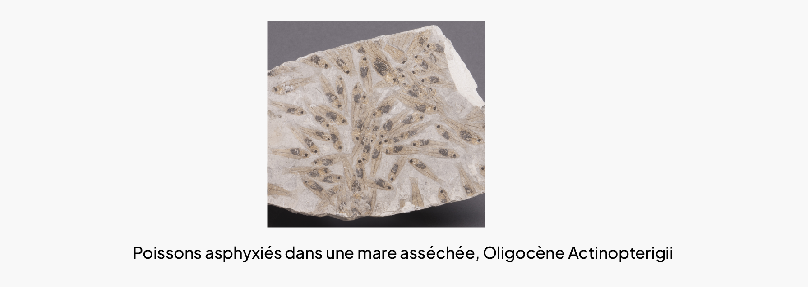

Les Bâtisseurs
Les constructions de stromatolites actuelles sont rares, en particulier pour les formes récifales marines ou lacustres dont les plus connues sont celles de Shark Bay en Australie.
Cependant, des formes plus petites sont connues autour de sources chaudes sulfureuses ou pétrifiantes comme à Réothier dans les Hautes-Alpes.
Dépôt à concentration exceptionnelle
Lorsque la grande densité de fossiles Coccosphère (assemblage de coccolithes Microscope électronique, 2011 résulte de concentration et accumulation, on les appelle Konzentrat-Lagerstätten (dépôt à concentration exceptionnelle).

Plusieurs gisements paléontologiques du Bassin de Paris peuvent être considérés comme des Konzentrat-Lagerstätten, mais le plus emblématique est probablement celui de Grignon (Yvelines).
• Matière végétale
Au fur et à mesure de son enfouissement, et donc de l’augmentation de la température de l’environnement, la matière végétale passe par plusieurs étapes.
Elle va d’abord perdre son eau et les éléments volatiles (CO 2), puis concentrer le carbone. On appelle ce processus la charbonisation ou houillification. Le processus complet demande entre 10 et 100 millions d’années.
En fonction de sa teneur en carbone, le charbon sera appelé différemment : tourbe (50-55%), lignite (55-75%), houille (75-90%), puis anthracite (>90%). Plus la teneur en carbone est élevée, plus le pouvoir calorifique du charbon est important.
Ces gisements exceptionnels sont grandement recherchés et exploités par les groupes humains partout dans le monde.
